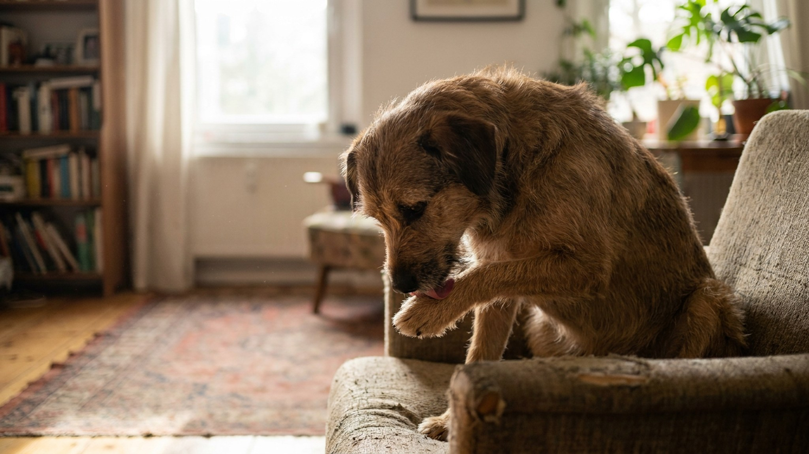

Звук — ритмичный, настойчивый, часами. Собака вылизывает лапы снова и снова, пока шерсть между пальцами не становится рыжей или тёмно-коричневой. Это не причуда и не вредная привычка — за навязчивым вылизыванием всегда стоит конкретная причина. Пять самых частых из них — и чёткие ориентиры: когда можно понаблюдать, а когда уже пора к ветеринару.
Вылизывание лап — нормальная часть собачьего грумминга. Собаки чистят лапы после прогулки, при небольшом раздражении, из скуки. Это становится поводом для беспокойства, когда:
Если хотя бы один из этих пунктов — про вашу собаку, читайте дальше.
Вылизывание — одно из первых компульсивных действий, к которому прибегают собаки в состоянии хронической тревоги. Оно запускает выброс эндорфинов и на короткое время снижает напряжение. Именно поэтому привычка быстро закрепляется.
На что обратить внимание: усилилось ли вылизывание после переезда, появления нового члена семьи или животного, изменения режима прогулок, долгих отлучений хозяина? Коррелирует ли с конкретными ситуациями — после одиночества, после громких звуков, перед поездками?
Что описать врачу: когда началось, с чем совпало, в какие моменты усиливается, как ведёт себя собака в эти моменты в целом (скулит, прячется, не ест).
Рабочие и охотничьи породы — лабрадоры, бордер-колли, хаски, джек-рассел-терьеры — созданы для активной деятельности. Когда её нет, мозг ищет замену. Вылизывание лап становится «занятием»: монотонным, но достаточно стимулирующим, чтобы занять время.
На что обратить внимание: сколько активных прогулок в день, есть ли нюхательные игры и обучение командам, есть ли время, когда собака откровенно бездельничает и при этом вылизывает лапы.
Что делать: увеличить физическую нагрузку и — что не менее важно — умственную. Нюхательные коврики, кормушки-головоломки, обучение новым командам буквально устают мозг собаки так же, как долгая пробежка.
Городской асфальт зимой покрывается реагентами, летом — пылью и остатками химических обработок. Дачный газон может содержать удобрения, инсектициды или растения, сок которых раздражает кожу. Даже обычный песок при регулярном контакте сушит подушечки.
На что обратить внимание: начинается ли вылизывание сразу после прогулки? Проходит ли после мытья лап? Связано ли с конкретным маршрутом или сезоном?
Что помогает: мыть лапы тёплой водой после каждой прогулки, вытирать насухо (особенно между пальцами), в период обработок газонов менять маршрут или использовать специальные ботинки для собак. О средствах для ухода за подушечками и защите кожи — обсудите с ветеринаром.
Собаки могут реагировать на определённые компоненты рациона или на материалы, с которыми контактируют — ткань лежанки, материал игрушек, бытовая химия на полу. При этом лапы оказываются одним из первых мест, где проявляется раздражение кожи.
На что обратить внимание: изменился ли рацион незадолго до начала вылизывания? Есть ли другие признаки раздражения — в ушах, вокруг глаз, в паху? Усилилось ли в определённое время года?
Что описать врачу: полный рацион (корм, лакомства, добавки), что изменилось последние 2–3 месяца, фото лап при наличии покраснений. Пищевые и контактные раздражители хорошо поддаются коррекции, но только с подтверждением причины — ветеринар и при необходимости дерматолог определят направление.
Укол, царапина, заноза, ноготь, который врос или обломился — всё это вызывает желание вылизывать конкретную точку. Иногда причина не на поверхности: межпальцевые кисты или воспаление корня когтя могут быть не видны при беглом осмотре.
На что обратить внимание: вылизывает только одну лапу или одно место? Хромает? Не даёт трогать лапу? Вы заметили что-то при внешнем осмотре — покраснение, припухлость между пальцами, изменение когтя?
Когда срочно к врачу: если есть видимое повреждение, собака хромает, держит лапу или при прикосновении к определённой точке скулит — это повод показаться ветеринару в ближайшие день-два, а не через неделю.
Чем точнее информация у врача, тем быстрее удаётся установить причину. Полезно записать или сфотографировать:
Это не перестраховка — это экономит время на приёме и помогает избежать лишних обследований.
Навязчивое вылизывание — не косметическая проблема. Запущенный случай оборачивается хроническим раздражением кожи, которое само становится дополнительным стимулом вылизывать. Чем раньше разобраться с причиной, тем проще прервать этот круг.
Материал носит информационный характер и не заменяет очную консультацию ветеринара.